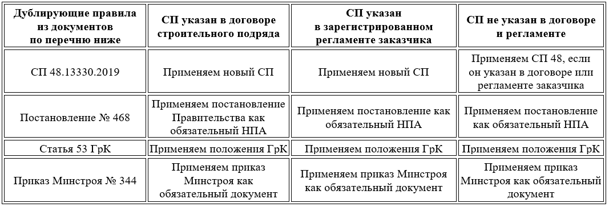

Как применять дублирующие правила нового СП
В новый Свод правил Минстрой включил единые положения по проведению строительного контроля, обязанности ответственных лиц, состав и содержание работ, а также унифицированный перечень исполнительной документации. То есть СП объединил и расширил в одном документе несколько нормативных актов:
Кроме того, в него вошли положения и ссылки действующих ГОСТ и СП. Их дополнили разъяснениями по некоторым видам работ и положений при СК. Однако те же самые правила частично изложены в перечисленных НТД и действуют до сих пор. Этот факт и добавил больше вопросов по практическому применению СП. Основной из них звучит так: «Какой документ применять, если в СП и другом НПА разные правила?»
Свод правил 543 носит добровольный характер, поэтому до внесения поправок в дублирующие нормативы – используйте тот документ, который носит обязательный характер. Давайте разберем этот вопрос на конкретном примере.
Пример. Какой срок применять для вызова представителей стройконтроля
В Своде правил СП 543.1325800.2024 по-новому регламентировали срок извещения СК заказчика о предъявлении скрытых работ. Вместо трех рабочих дней из постановления № 468 в СП теперь фраза «извещать о сроках освидетельствования работ». То есть разработчики посчитали, что сроки извещения стороны укажут в своем договоре строительного подряда. Однако постановление № 468 носит обязательный характер. Поэтому подрядчик должен и сейчас соблюдать трехдневный срок и не вправе изменить его договором (п. 11 постановления Правительства от 21.06.2010 № 468).
Чтобы выбрать, какой документ использовать в работе при наличии дублирующих правил, воспользуйтесь таблицей ниже.

При наличии у заказчика стандарта организации, специалист СК будет руководствоваться именно им
ведущий инженер ПТО с опытом работы в гражданском и промышленном строительстве более 10 лет, преподаватель ФАУ «РосКапСтрой», автор курса «Исполнительная документация в строительстве»
Чтобы СК заказчика мог применить к подрядчику требования нового СП, необходимо указать эти требования в договоре подряда между заказчиком и подрядчиком.
Теперь проверим, хорошо ли вы разбираетесь в теме урока. Прочитайте утверждение и определите, верное оно или ложное.
Поздравляем, экспресс-курс подошел к завершению. Переходите к итоговому тесту, в нем всего пять вопросов. За успешное прохождение теста вы получите электронный сертификат об обучении. Желаем успехов в работе с новым СП!